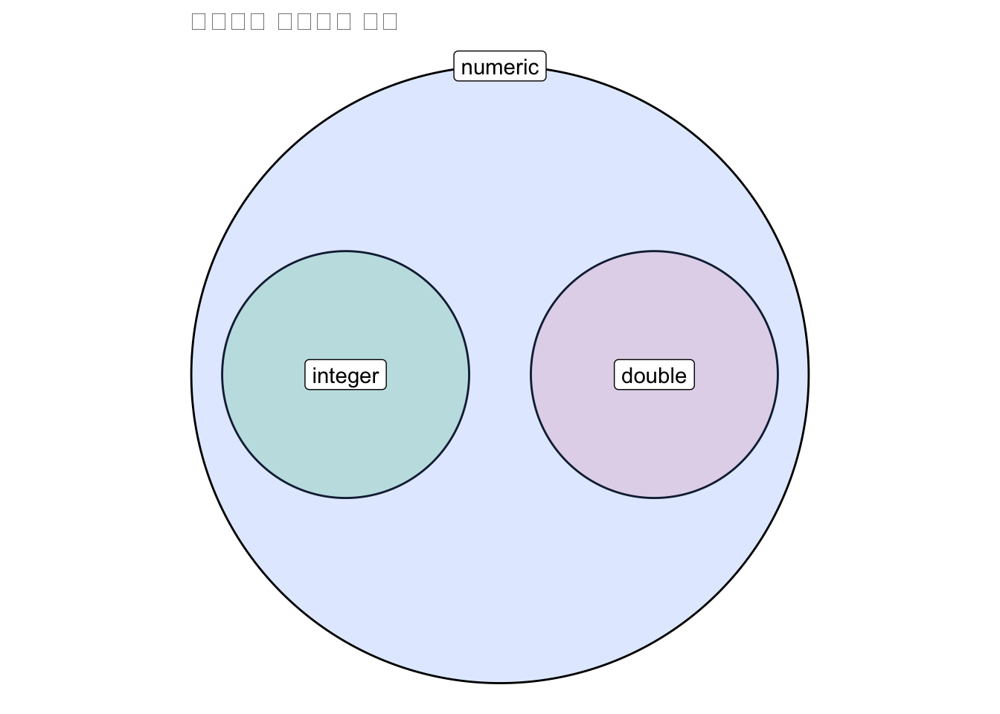

a <- 'Welcome to R!'
aa <- 'aa'
aa <- 1이번 포스트에서는 R을 사용하기 위해 반드시 알아야 하는 R 필수 개념에 대해 설명드리도록 하겠습니다.
R에서 사용되는 용어
Object
object란 R에서 어떠한 데이터를 갖는 값을 의미합니다. Object는 객체라고도 불리며, 다양한 유형이나 구조의 데이터를 특정 이름으로 저장하는 것을 말합니다.
object의 생성
R에서 object(객체)의 생성은 <- 또는 = 를 통해 이루어집니다.
<-를 기준으로 왼쪽의 값이 object의 이름이고 오른쪽이 object가 갖게 되는 또는 object에 저장되는 데이터입니다.
LHS <- RHS
A <- B
object의 생성과 출력
object를 생성한다는 것은 특정 데이터를 특정한 이름으로 저장하는 것입니다.
A <- B 를 사용해 데이터를 생성하면 A라는 object에는 B라는 데이터가 저장됩니다.
위에서는 ’Welcome to R!’이라고 하는 문자를 a라고 하는 object 로 생성한 것입니다. 반면 object의 출력은 생성한 object 에 저장되어 있는 데이터를 확인하는 것입니다.
object를 생성한다고 해서 그 값이 출력되지는 않습니다. object 갖고 있는 데이터를 확인하기 위해서는 object의 이름을 실행하거나 출력하는 함수를 사용해야 합니다.
a [1] "Welcome to R!"# 또는
print(a)[1] "Welcome to R!"만약 object를 생성함과 동시에 그 object를 출력하고 싶다면 아래와 같이 실행하면 됩니다.
a <- 'Welcome to R!'; print(a)[1] "Welcome to R!"Function (함수)
R에서 함수란 특정한 기능을 수행하는 명령어입니다. 보통 “~을 한다” 처럼 우리말의 동사라고 이해하면 쉽습니다.
R에서 함수는 일반적으로 ()가 붙습니다.
print <- '프린트' # 프린트라는 값을 갖는 object
print('dd') # 'dd'를 출력하는 함수[1] "dd"위의 예시에서 print는 ’프린트’라는 문자를 갖는 object인 반면, print()는 특정 object를 출력하는 함수입니다.
물론 함수의 이름으로도 object를 만들 수 있습니다. 그러나 이럴 경우, 분석 과정에서 이름을 혼동하는 경우가 발생할 수 있기 때문에, 나중을 생각한다면 그렇게 권장하는 방법은 아닙니다. 따라서 함수명이 아닌 다른 이름으로 object를 만드시는 것을 추천합니다.
Tip
R 뿐만 아니라 프로그래밍 언어에는 일반적으로 영어를 활용하여 object 이름을 붙여줍니다.
다양한 방법들이 있겠으나, 추천드리는 방법은 다음과 같습니다. 우선 띄어쓰기가 필요없는 하나의 단어로 object 이름을 지어주는 것은 말그대로 영어단어를 사용해주면 됩니다.
result <- 'the result'하나의 단어를 뛰어 넘어 여러 개의 단어를 붙여 써야 하는 경우에는 아래의 방법 중 원하는 방식을 사용하시면 됩니다.
- myResult
- my_result
- my.result
작업 경로 (working directory, wd)
작업경로란 현재 내가 데이터 분석을 진행하고 있는 위치를 의미합니다.
작업경로와 관련된 함수는 크게 2가지가 있습니다.
getwd()현재 내 작업경로를 확인합니다.getwd()[1] "/Users/jyh/Documents/blog/blog/posts/2023-01-27-Rbase"setwd()작업경로를 특정한 곳으로 변경합니다.setwd("작업경로로 설정할 위치")
작업경로를 설정하는 이유는 외부 데이터 파일(e.g., .csv) 을 불러올 때, 그 파일이 있는 경로가 필요하기 때문입니다.
패키지 (packages)
R에서 패키지란 특정 함수들을 포함하고 있는 함수 세트 라고 할 수 있습니다.
데이터 분석에 필요한 패키지들을 설치한 뒤 그 패키지를 불러 들여와야 사용할 수 있습니다.
패키지 설치:
install.packages()install.packages('패키지명')위와 같이 설치하고자 하는 패키지를
install.packages()함수 안에 따옴표가 붙은 문자 형태로 넣어주어야 합니다.패키지 불러오기:
library()또는require()library(dplyr) # 또는 require(dplyr)설치된 패키지를 불러오기 위해서는
library()또는require()함수 안에 패키지 이름을 object 형태(따옴표가 붙지 않은 형태)로 넣어주어야 합니다.사실 패키지 이름을 입력할 때, 따옴표를 사용해 문자로 넣어주어도 가능합니다. 그러나 문자열로 넣게 된다면 자동완성기능을 활용할 수 없게 됩니다. 그렇기 때문에 패키지의 이름을 전부 입력해야만 하죠. 따라서 가급적이면 따옴표를 사용하지 않는 것을 추천합니다.
Notelibrary()와require()는 패키지를 불러온다는 점에서 동일한 역할을 하지만, 차이점이 존재합니다.library()는 설치되지 않은 패키지를 불러오면 에러메시지를 출력하지만,require()는 경고와 함께 T/F 값을 반환할 수 있습니다.# library library(ggplot3)Error in library(ggplot3) : there is no package called 'ggplot3'require(ggplot3)필요한 패키지를 로딩중입니다: ggplot3 Warning message: In library(package, lib.loc = lib.loc, character.only = TRUE, logical.return = TRUE, : ‘ggplot3’이라고 불리는 패키지가 없습니다
패키지를 성공적으로 불러왔다면, 패키지에 있는 함수들을 활용할 수 있게 됩니다.
물론 패키지를 불러오지 않고 (library()나 require()를 이용하지 않고) 패키지 내의 함수를 사용하는 방법이 있긴 합니다.
dplyr::select(column이름) #패키지명::함수위의 코드처럼 패키지명::함수명 의 방식을 이용한다면 패키지 내에 있는 함수들을 사용할 수 있습니다.
그러나 매번 패키지명::을 이용해 함수를 이용하는 것보다 library() 함수를 한 번 실행한 뒤, 패키지의 함수들을 이용하는 것이 훨씬 효율적이겠죠?
데이터의 유형
R에서 가장 기본적으로 활용되는 데이터의 유형 (type)에 대해 알아볼 것입니다.
R의 기본적인 데이터의 유형은 크게 numeric, charcter, factor, logical 이 있음.
numeric
numeric은 이름에서 알 수 있듯이 숫자 데이터입니다. numeric은 정수와 실수를 모두 포함합니다. R에서 정수는 integer, 실수는 double로 표현됩니다.
integer
우리가 생각하는 정수는 흔히 소숫점이 없는 숫자입니다. 그러나 R에서는 단순히 숫자에 소수점이 없다고 해서 integer로 인식하지 않습니다.
is.integer(1) # FALSE[1] FALSEclass(1) # numeric[1] "numeric"is.integer(1L)[1] TRUEclass(1L)[1] "integer"위의 코드로 봤을 때, 단순한 1은 integer가 아니라 numeric입니다.
R에서 integer를 사용하기 위해선 숫자 뒤에 L을 붙여주어야 합니다.
double
우리가 알고 있는 실수는 소수점이 있는 숫자입니다. 그러나 R에서는 앞서 살펴 보았듯, L이 붙어 integer로 지정된 숫자가 아니라면 모두 실수라고 할 수 있습니다.
is.numeric(1) #TRUE[1] TRUEis.double(1) #TRUE[1] TRUEclass(1.5) #numeric[1] "numeric"1이라는 숫자는 double이기도 하면서 동시에 numeric입니다. 또한 소수점이 들어가는 숫자의 유형을 확인해보면 double이 아니라 numeric이라는 것을 알 수 있습니다.
즉, numeric이 숫자데이터에서 가장 상위의 개념이고 그 하위 개념으로 double 과 integer 가 있다고 이해하시면 쉽습니다.
#|echo: false
#|warning: false
require(ggplot2)
require(ggforce)
temp <- data.frame(x=c(100,300,200),
y=c(250,250,250),
r=c(80,80,200),
y_label=c(250,250,450),
label = c('integer','double','numeric'))
ggplot(temp) +
geom_circle(aes(x0=x,y0=y,r=r, fill=label),alpha=.2) +
coord_fixed()+
geom_label(data=temp,aes(x=x,y=y_label,label=label))+
theme_void()+
labs(title=' 숫자유형 데이터의 관계')+
theme(legend.position='none')
그러나 이 둘을 구분해서 사용하는 경우는 드뭅니다. 모든 숫자 데이터는 numeric으로 사용하셔도 상관없습니다.
character
character는 큰 따옴표 또는 작은 따옴표가 붙은 문자열 데이터를 의미합니다.
chr <- 'character'
chr[1] "character"앞서 object 부분에서 말씀드렸듯이, ‘character’ 라는 문자열 데이터이고, chr는 ‘character’ 값을 갖는 object입니다. chr 와 'chr'을 헷갈리지 마시기 바랍니다.
factor
factor는 다른 데이터의 유형과 달리 순서 (level)를 갖는 데이터 유형입니다.
vec_num <- 1:10
vec_fac <- factor(1:10)
class(vec_fac) # factor[1] "factor"print(vec_fac) [1] 1 2 3 4 5 6 7 8 9 10
Levels: 1 2 3 4 5 6 7 8 9 10vec_num과 vec_fac은 모두 1부터 10까지의 데이터를 갖고 있습니다. 그러나 vec_num과 달리 vec_fac을 출력했을 때, Levels도 함께 출력되는 것을 확인할 수 있습니다.
만약 임의로 factor 변수의 level을 변경하고 싶다면 아래와 같이 factor 함수 안에 levels 부분을 수정해주면 됩니다.
vec_fac2 <- factor(1:10, levels=c(1,3,5,7,9,10,8,6,4,2))
print(vec_fac2) [1] 1 2 3 4 5 6 7 8 9 10
Levels: 1 3 5 7 9 10 8 6 4 2vec_fac과 vec_fac2의 levels가 다른 것을 확인할 수 있습니다.
또한 factor를 ordinal 하게 만들어줄 수 있습니다. ordered=T 를 이용해 nominal 한 factor를 ordinal하게 변경할 수 있습니다.
vec_fac3 <- factor(1:10,
ordered = T,
levels=c(1,3,5,7,9,10,8,6,4,2))
print(vec_fac3) [1] 1 2 3 4 5 6 7 8 9 10
Levels: 1 < 3 < 5 < 7 < 9 < 10 < 8 < 6 < 4 < 2출력 시 Levels에 < 가 생성되는 것을 알 수 있습니다.
logical
logical은 단어에서 알 수 있듯 논리형 데이터 입니다. 쉽게 말하면 참(TRUE)인지 거짓(FALSE)인지를 나타내는 데이터 유형입니다.
class(TRUE) # logical[1] "logical"TRUE[1] TRUEFALSE[1] FALSET[1] TRUEF[1] FALSER에서 TRUE 와 FALSE 는 각각 T 와 F로 줄여쓸 수 있습니다.
Note
R에서 사용되는 변수를 개념적으로 정리해보면 다음과 같습니다.
연속형 변수(Continuous variable): numeric, integer, double
범주형 변수(Categorical variable): character, factor
데이터의 구조
앞서서 데이터의 유형에 배워봤다면, 이번에는 데이터가 어떤 형태로 존재하는지 알아볼 차례입니다.
R에서 가장 많이 활용되는 4가지의 데이터 구조, vector, matirx, data.frame, list를 배워보도록 하겠습니다.
Vector
vector는 하나 이상의 값을 갖는 1차원 구조의 데이터입니다. 가장 단순하지만, 또 데이터 분석에 많이 활용되는 데이터 구조 중 하나입니다.
보통 vector를 생성할 때는 c() 를 이용해 생성합니다. c()는 ’concatenate’의 약자입니다.
vec1 <- c(1,2,3); vec1[1] 1 2 3vec2 <- c('a','b','c'); vec2[1] "a" "b" "c"vec1은 numeric 데이터를 갖는 vector이고 vec2는 character 데이터를 갖는 vector입니다.
여러 유형의 데이터를 갖는 vector인 경우, 하나라도 문자(character) 또는 factor가 있는 경우, 전부 그 유형의 데이터를 갖는 vector로 저장됩니다.
vec3 <- c(1,2,3,'a',5,6)
vec3[1] "1" "2" "3" "a" "5" "6"vec3를 선언할 때는 1,2,3 과 같은 숫자가 들어갔지만, vec3를 출력해보면 따옴표가 붙은 character인 것을 알 수 있습니다.
Matrix
2차원 구조의 데이터입니다. 행렬이라고 이해하시면 쉽습니다.
R에서 matrix를 생성하는 함수는 matrix()입니다.
mat <- matrix(1:12)
mat2 <- matrix(1:12, nrow=3) # 행의 개수: 3
mat3 <- matrix(1:12, ncol=3) # 열의 개수: 3
mat4 <- matrix(1:12, ncol=3, byrow=T)matrix() 함수에서는 행 또는 열의 개수를 지정해줄 수 있습니다.
nrow(): 행의 개수 지정ncol(): 열의 개수 지정
마지막의 byrow인자는 matrix의 입력 순서를 행의 방향으로 설정해주는 것입니다. 초기에는 matrix가 열 방향(위에서 아래로 (↓))이었다면, byrow를 통해 matrix의 값들을 행 방향 (좌에서 우로 (→))으로 입력할 수 있습니다.
Data.frame
2차원 구조의 데이터로서, R에서 데이터분석을 위해 가장 많이 활용되는 데이터 구조입니다. 데이터프레임은 matrix와 동일한 2차원 형태지만 몇 가지 다른 점이 있습니다.
- matrix와 달리,
$기호를 이용해 column 이름으로 호출 가능합니다. - 각 열(column)별로 다른 데이터 유형을 가질 수 있습니다.
data.frame은 앞으로 가장 많이 사용할 데이터 구조이기 때문에, 아래에서 더 다뤄보도록 하겠습니다.
List
list는 다른 데이터 구조들과는 다릅니다.
데이터프레임의 column처럼 데이터마다 이름을 가질 수 있습니다.
각 이름마다 다른 유형, 다른 구조의 데이터를 가질 수 있습니다.
각 이름마다 길이가 다른 데이터를 가질 수 있습니다.
l <- list() l$a <- 1:5 l$b <- LETTERS # 알파벳 대문자 l$c <- matrix(1:20,nrow=4, byrow=T) l$d <- data.frame(a=1:5, b=letters[1:5]) l$a [1] 1 2 3 4 5 $b [1] "A" "B" "C" "D" "E" "F" "G" "H" "I" "J" "K" "L" "M" "N" "O" "P" "Q" "R" "S" [20] "T" "U" "V" "W" "X" "Y" "Z" $c [,1] [,2] [,3] [,4] [,5] [1,] 1 2 3 4 5 [2,] 6 7 8 9 10 [3,] 11 12 13 14 15 [4,] 16 17 18 19 20 $d a b 1 1 a 2 2 b 3 3 c 4 4 d 5 5 e위의 코드를 보면,
l이라고 하는list에는a라는 이름을 갖는 데이터와b라는 이름을 갖는 데이터가 존재합니다.또한
a는 1부터 5까지의numeric유형의vector를 갖는 반면,b는 알파벳 대문자의character유형의vector를,c는 4행 5열의matrix를, 마지막으로d는data.frame을 갖습니다.
Operator: 연산자
산술 연산자
산술연산자는 숫자를 계산하는 데 사용되는 연산자를 말합니다. 우리가 잘 아는 덧셈(+), 뺄셈(-), 곱셈(*), 나눗셈(/) 등의 연산자가 있습니다.
논리 연산자
논리 연산자는 참(TRUE)과 거짓(FALSE)를 반환하는 연산자들을 의미합니다. 보통 LHS와 RHS의 값을 비교할 때 사용하는 연산자입니다.
연산 결과가 맞는 경우는 TRUE를, 그렇지 않은 경우는 FALSE를 반환합니다.
논리 연산자는 주로 데이터프레임과 함께 특정 조건을 만족하는 행을 찾아낼 때 사용합니다.
A == B: 같음10 == 10[1] TRUEA < B,A <= B: 작음, 작거나 같음5 < 10[1] TRUE5<=10[1] TRUEA > B,A >= B:큼, 크거나 같음44>=10[1] TRUE10>35[1] FALSEA != B: 같지 않음10 != 5[1] TRUEA & B: A와 B가 모두 참일 때TRUE를 반환합니다.10 >5 & 25 > 20[1] TRUEA | B: A 또는 B 하나만 참이면TRUE를 반환합니다.10 <5 | 50 > 49[1] TRUE
파이프 연산자
파이프 연산자란 R의 특수한 연산자로, % 가 붙은 연산자들을 의미합니다. 대표적인 파이프 연산자는 %>% 가 있습니다. 이 연산자를 사용하기 위해선 magrittr 패키지가 필요합니다. 단축키는 ctrl + shift + m 로 사용할 수 있습니다.
Tip
기존에 존재하던 %>% 는 magrittr 패키지를 불러들여와야 사용이 가능했습니다. 하지만 R 4.1 이후로는 기본적으로 |> 라는 파이프 연산자를 제공하고 있습니다. 실질적으로 기능은 거의 같기 때문에 원하는 파이프 연산자를 사용하시면 됩니다.
데이터 프레임
이번 장에서는 R의 데이터 구조 중 가장 많이 활용되는 data.frame에 대해 심층적으로 알아보겠습니다데이터를 보며 설명하기 전, 데이터프레임에 대해 개념적으로 꼭 알아두어야 할 것이 있습니다. 바로 데이터프레임은 열(column) 중심의 데이터 구조라는 것입니다.
pkg <- require(NHANES)
if(!pkg) install.packages('NHANES') # 패키지 설치
require(NHANES)
df <- as.data.frame(NHANES)[1:20,]먼저 df 라는 이름으로 데이터를 저장하였습니다. NHANES 데이터는 NHANES 패키지 설치를 통해 사용할 수 있습니다. NHANES 데이터는 미국의 건강영양조사 데이터입니다.
데이터프레임은 행/열의 번호나 이름을 통해 그 일부분을 선택할 수 있습니다. R 기본 데이터 프레임은 df[row, column] 형식으로 사용가능합니다.
번호로 선택하기
df[1,]우선 번호로 행을 선택하는 방법은 대괄호 안에 행의 번호를 입력한 뒤, ,를 찍어주는 것입니다.
여러 행을 선택하기 위해선 c()로 묶거나, :을 통해 연속적인 행의 번호를 넣어주면 됩니다.
df[c(1,3,5),] # 1,3,5행 선택df[1:10,] # 1~10행 선택만약 , 없이 숫자만 들어간다면 행을 선택하는 것이 아니라 열을 선택하게 됩니다. 따라서 행을 선택하고자 한다면 반드시 ,를 붙여줘야 합니다.
df[c(1,3,5)] # 1,3,5열 선택올바르게 열을 선택하기 위해선 , 다음에 선택하고자 하는 열의 번호를 선택하면 됩니다.
df[,1] [1] 51624 51624 51624 51625 51630 51638 51646 51647 51647 51647 51654 51656
[13] 51657 51659 51666 51667 51671 51677 51678 51679이름으로 선택하기
앞서 말씀드린 것처럼 data.frame은 column이 중심이 되는 데이터 구조입니다. 따라서 행을 선택하는 일보다는 column을 선택하여 데이터 분석을 진행하는 일이 훨씬 많습니다.
데이터 프레임에서 열을 선택하기 위해서는 앞서 열의 번호를 선택하는 방법도 있습니다. 그러나 모든 열의 위치를 번호로 호출하는 것은 번거로운 일입니다. 따라서 열의 이름으로 호출하는 것이 더욱 쉽고 효율적입니다.
df[,'BMI'] [1] 32.22 32.22 32.22 15.30 30.57 16.82 20.64 27.24 27.24 27.24 23.67 23.69
[13] 26.03 19.20 26.22 26.60 27.40 28.54 25.84 24.74위처럼 대괄호와 열의 이름을 함께 사용할 수도 있으나, $ 을 이용해 더욱 쉽게 데이터프레임의 열을 선택할 수 있습니다.
df$Gender [1] male male male male female male male female female female
[11] male male male female female male female male male male
Levels: female male대괄호보다 $가 좋은 점은 자동완성 기능이 있다는 것입니다. $ 를 누른 뒤, 제시되는 column들이 떴을 때, 위아래 방향키를 통해 원하는 열의 이름을 선택하기만 하면 됩니다.
조건으로 선택하기
앞서 논리 연산자를 통해 특정 조건을 충족하는 행을 선택할 수 있다고 하였습니다.
df[df$Gender=='female',]df[df$Gender=='male' & df$BPDiaAve>=80,][]안에서 논리 연산자를 통해 특정 column의 조건을 만족하는 행들을 선택할 수 있습니다.
함수
R에는 수많은 함수들이 존재합니다. 수치를 계산하는 함수부터 데이터를 파악하는 함수까지 그 수를 헤아릴 수 없습니다.
이번 장에서는 R을 사용하면서 반드시 알아야 하거나 알아두면 편리한 함수들에 대해 알아보겠습니다.
요약 함수
R에서는 다양한 숫자 데이터를 특정한 값으로 요약할 수 있습니다. 이 글에서는 다음과 같은 함수들을 요약함수로 지칭하겠습니다. 대표적인 요약 함수로는 mean()평균, sd()표준편차, min()최소값, max()최대값, median()중앙값, sum()합계, quantile() 4분위수 등이 있습니다.
mean(df$Age) # 평균[1] 36.05sd(df$Age) # 표준편차[1] 20.182min(df$Age) # 최소[1] 4max(df$Age) # 최대[1] 66median(df$Age) # 중앙값[1] 39.5quantile(df$Age) # 4분위수 0% 25% 50% 75% 100%
4.0 14.5 39.5 51.0 66.0 만약 numeric 데이터에 결측치(NA)가 있다면 요약함수를 실행했을 때, NA가 출력됩니다.
mean(df$BMI) [1] 25.682따라서 데이터 내에 NA가 있는 경우는 요약함수 안에 na.rm=T를 넣어줘야 합니다. NA를 제외한 나머지 데이터로 요약한 값이 출력됩니다.
mean(df$BMI, na.rm=T) [1] 25.682한편, 숫자형 데이터 이외에, character, factor 등 범주형 데이터의 경우 각 범주의 응답 분포를 확인할 수 있습니다. table() 함수를 통해 이를 파악할 수 있습니다.
table(df$Gender)
female male
7 13 응답 분포를 확률로 표현할 수 있는 함수는 prop.table() 입니다. 이 때, prop.table() 에 넣어줄 인자는 table()에 범주를 확인하고자 하는 변수를 넣은 값입니다.
prop.table(table(df$Gender))
female male
0.35 0.65 prop.table(table(df$Gender))*100 # percent 위해 100 곱하기
female male
35 65 data.frame 관련 함수
다음으로 데이터프레임과 관련된 함수를 알아보겠습니다. 사실 이 함수들은 data.frame뿐만 아니라 vector나 다른 구조의 데이터들과도 사용되는 함수입니다.
다만 앞으로 우리가 다룰 데이터 구조의 대부분이 data.frame이고, data.frame을 활용해 데이터를 분석할 때 그 활용도가 높기 때문에 편의상data.frame 관련 함수라고 지칭하겠습니다.
데이터 불러오기/저장하기
read.csv() 를 통해 외부 csv 파일을 작업환경으로 불러올 수 있습니다.
df2 <- read.csv('데이터명.csv')반면 작업환경에서 분석하던 data.frame을 외부 csv 파일로 저장할 수 있습니다. write.csv() 함수를 통해 가능합니다.
write.csv(df2,'~/temp.csv') #작업저장경로+파일이름데이터 훑어보기
일반적으로 데이터를 분석하기 전, 데이터의 특징을 파악하는 것이 필요합니다. 데이터의 특징을 파악하는 함수들은 head(),tail(), str(), summary()등이 있습니다.
head(df) # 데이터의 첫 6행을 확인tail(df) # 데이터의 마지막 6행을 확인str(df) # 데이터의 구조 확인'data.frame': 20 obs. of 76 variables:
$ ID : int 51624 51624 51624 51625 51630 51638 51646 51647 51647 51647 ...
$ SurveyYr : Factor w/ 2 levels "2009_10","2011_12": 1 1 1 1 1 1 1 1 1 1 ...
$ Gender : Factor w/ 2 levels "female","male": 2 2 2 2 1 2 2 1 1 1 ...
$ Age : int 34 34 34 4 49 9 8 45 45 45 ...
$ AgeDecade : Factor w/ 8 levels " 0-9"," 10-19",..: 4 4 4 1 5 1 1 5 5 5 ...
$ AgeMonths : int 409 409 409 49 596 115 101 541 541 541 ...
$ Race1 : Factor w/ 5 levels "Black","Hispanic",..: 4 4 4 5 4 4 4 4 4 4 ...
$ Race3 : Factor w/ 6 levels "Asian","Black",..: NA NA NA NA NA NA NA NA NA NA ...
$ Education : Factor w/ 5 levels "8th Grade","9 - 11th Grade",..: 3 3 3 NA 4 NA NA 5 5 5 ...
$ MaritalStatus : Factor w/ 6 levels "Divorced","LivePartner",..: 3 3 3 NA 2 NA NA 3 3 3 ...
$ HHIncome : Factor w/ 12 levels " 0-4999"," 5000-9999",..: 6 6 6 5 7 11 9 11 11 11 ...
$ HHIncomeMid : int 30000 30000 30000 22500 40000 87500 60000 87500 87500 87500 ...
$ Poverty : num 1.36 1.36 1.36 1.07 1.91 1.84 2.33 5 5 5 ...
$ HomeRooms : int 6 6 6 9 5 6 7 6 6 6 ...
$ HomeOwn : Factor w/ 3 levels "Own","Rent","Other": 1 1 1 1 2 2 1 1 1 1 ...
$ Work : Factor w/ 3 levels "Looking","NotWorking",..: 2 2 2 NA 2 NA NA 3 3 3 ...
$ Weight : num 87.4 87.4 87.4 17 86.7 29.8 35.2 75.7 75.7 75.7 ...
$ Length : num NA NA NA NA NA NA NA NA NA NA ...
$ HeadCirc : num NA NA NA NA NA NA NA NA NA NA ...
$ Height : num 165 165 165 105 168 ...
$ BMI : num 32.2 32.2 32.2 15.3 30.6 ...
$ BMICatUnder20yrs: Factor w/ 4 levels "UnderWeight",..: NA NA NA NA NA NA NA NA NA NA ...
$ BMI_WHO : Factor w/ 4 levels "12.0_18.5","18.5_to_24.9",..: 4 4 4 1 4 1 2 3 3 3 ...
$ Pulse : int 70 70 70 NA 86 82 72 62 62 62 ...
$ BPSysAve : int 113 113 113 NA 112 86 107 118 118 118 ...
$ BPDiaAve : int 85 85 85 NA 75 47 37 64 64 64 ...
$ BPSys1 : int 114 114 114 NA 118 84 114 106 106 106 ...
$ BPDia1 : int 88 88 88 NA 82 50 46 62 62 62 ...
$ BPSys2 : int 114 114 114 NA 108 84 108 118 118 118 ...
$ BPDia2 : int 88 88 88 NA 74 50 36 68 68 68 ...
$ BPSys3 : int 112 112 112 NA 116 88 106 118 118 118 ...
$ BPDia3 : int 82 82 82 NA 76 44 38 60 60 60 ...
$ Testosterone : num NA NA NA NA NA NA NA NA NA NA ...
$ DirectChol : num 1.29 1.29 1.29 NA 1.16 1.34 1.55 2.12 2.12 2.12 ...
$ TotChol : num 3.49 3.49 3.49 NA 6.7 4.86 4.09 5.82 5.82 5.82 ...
$ UrineVol1 : int 352 352 352 NA 77 123 238 106 106 106 ...
$ UrineFlow1 : num NA NA NA NA 0.094 ...
$ UrineVol2 : int NA NA NA NA NA NA NA NA NA NA ...
$ UrineFlow2 : num NA NA NA NA NA NA NA NA NA NA ...
$ Diabetes : Factor w/ 2 levels "No","Yes": 1 1 1 1 1 1 1 1 1 1 ...
$ DiabetesAge : int NA NA NA NA NA NA NA NA NA NA ...
$ HealthGen : Factor w/ 5 levels "Excellent","Vgood",..: 3 3 3 NA 3 NA NA 2 2 2 ...
$ DaysPhysHlthBad : int 0 0 0 NA 0 NA NA 0 0 0 ...
$ DaysMentHlthBad : int 15 15 15 NA 10 NA NA 3 3 3 ...
$ LittleInterest : Factor w/ 3 levels "None","Several",..: 3 3 3 NA 2 NA NA 1 1 1 ...
$ Depressed : Factor w/ 3 levels "None","Several",..: 2 2 2 NA 2 NA NA 1 1 1 ...
$ nPregnancies : int NA NA NA NA 2 NA NA 1 1 1 ...
$ nBabies : int NA NA NA NA 2 NA NA NA NA NA ...
$ Age1stBaby : int NA NA NA NA 27 NA NA NA NA NA ...
$ SleepHrsNight : int 4 4 4 NA 8 NA NA 8 8 8 ...
$ SleepTrouble : Factor w/ 2 levels "No","Yes": 2 2 2 NA 2 NA NA 1 1 1 ...
$ PhysActive : Factor w/ 2 levels "No","Yes": 1 1 1 NA 1 NA NA 2 2 2 ...
$ PhysActiveDays : int NA NA NA NA NA NA NA 5 5 5 ...
$ TVHrsDay : Factor w/ 7 levels "0_hrs","0_to_1_hr",..: NA NA NA NA NA NA NA NA NA NA ...
$ CompHrsDay : Factor w/ 7 levels "0_hrs","0_to_1_hr",..: NA NA NA NA NA NA NA NA NA NA ...
$ TVHrsDayChild : int NA NA NA 4 NA 5 1 NA NA NA ...
$ CompHrsDayChild : int NA NA NA 1 NA 0 6 NA NA NA ...
$ Alcohol12PlusYr : Factor w/ 2 levels "No","Yes": 2 2 2 NA 2 NA NA 2 2 2 ...
$ AlcoholDay : int NA NA NA NA 2 NA NA 3 3 3 ...
$ AlcoholYear : int 0 0 0 NA 20 NA NA 52 52 52 ...
$ SmokeNow : Factor w/ 2 levels "No","Yes": 1 1 1 NA 2 NA NA NA NA NA ...
$ Smoke100 : Factor w/ 2 levels "No","Yes": 2 2 2 NA 2 NA NA 1 1 1 ...
$ Smoke100n : Factor w/ 2 levels "Non-Smoker","Smoker": 2 2 2 NA 2 NA NA 1 1 1 ...
$ SmokeAge : int 18 18 18 NA 38 NA NA NA NA NA ...
$ Marijuana : Factor w/ 2 levels "No","Yes": 2 2 2 NA 2 NA NA 2 2 2 ...
$ AgeFirstMarij : int 17 17 17 NA 18 NA NA 13 13 13 ...
$ RegularMarij : Factor w/ 2 levels "No","Yes": 1 1 1 NA 1 NA NA 1 1 1 ...
$ AgeRegMarij : int NA NA NA NA NA NA NA NA NA NA ...
$ HardDrugs : Factor w/ 2 levels "No","Yes": 2 2 2 NA 2 NA NA 1 1 1 ...
$ SexEver : Factor w/ 2 levels "No","Yes": 2 2 2 NA 2 NA NA 2 2 2 ...
$ SexAge : int 16 16 16 NA 12 NA NA 13 13 13 ...
$ SexNumPartnLife : int 8 8 8 NA 10 NA NA 20 20 20 ...
$ SexNumPartYear : int 1 1 1 NA 1 NA NA 0 0 0 ...
$ SameSex : Factor w/ 2 levels "No","Yes": 1 1 1 NA 2 NA NA 2 2 2 ...
$ SexOrientation : Factor w/ 3 levels "Bisexual","Heterosexual",..: 2 2 2 NA 2 NA NA 1 1 1 ...
$ PregnantNow : Factor w/ 3 levels "Yes","No","Unknown": NA NA NA NA NA NA NA NA NA NA ...summary(df) # 데이터의 column 요약통계량 ID SurveyYr Gender Age AgeDecade
Min. :51624 2009_10:20 female: 7 Min. : 4.00 0-9 :4
1st Qu.:51636 2011_12: 0 male :13 1st Qu.:14.50 30-39 :4
Median :51650 Median :39.50 40-49 :4
Mean :51651 Mean :36.05 50-59 :4
3rd Qu.:51666 3rd Qu.:51.00 10-19 :2
Max. :51679 Max. :66.00 60-69 :2
(Other):0
AgeMonths Race1 Race3 Education
Min. : 49.0 Black : 1 Asian : 0 8th Grade :0
1st Qu.:176.2 Hispanic: 0 Black : 0 9 - 11th Grade:1
Median :475.0 Mexican : 1 Hispanic: 0 High School :6
Mean :436.2 White :16 Mexican : 0 Some College :3
3rd Qu.:615.8 Other : 2 White : 0 College Grad :4
Max. :795.0 Other : 0 NA's :6
NA's :20
MaritalStatus HHIncome HHIncomeMid Poverty
Divorced : 1 25000-34999:5 Min. : 17500 Min. :1.030
LivePartner : 1 75000-99999:5 1st Qu.: 30000 1st Qu.:1.360
Married :11 15000-19999:2 Median : 40000 Median :1.910
NeverMarried: 1 20000-24999:1 Mean : 53824 Mean :2.424
Separated : 0 35000-44999:1 3rd Qu.: 87500 3rd Qu.:2.330
Widowed : 0 (Other) :3 Max. :100000 Max. :5.000
NA's : 6 NA's :3 NA's :3 NA's :3
HomeRooms HomeOwn Work Weight Length
Min. : 3.00 Own :13 Looking :2 Min. :17.00 Min. : NA
1st Qu.: 5.75 Rent : 7 NotWorking:6 1st Qu.:56.40 1st Qu.: NA
Median : 6.00 Other: 0 Working :7 Median :75.20 Median : NA
Mean : 6.70 NA's :5 Mean :67.70 Mean :NaN
3rd Qu.: 7.50 3rd Qu.:84.75 3rd Qu.: NA
Max. :11.00 Max. :93.80 Max. : NA
NA's :20
HeadCirc Height BMI BMICatUnder20yrs
Min. : NA Min. :105.4 Min. :15.30 UnderWeight: 0
1st Qu.: NA 1st Qu.:146.5 1st Qu.:23.68 NormWeight : 0
Median : NA Median :166.7 Median :26.41 OverWeight : 0
Mean :NaN Mean :159.1 Mean :25.68 Obese : 0
3rd Qu.: NA 3rd Qu.:169.6 3rd Qu.:27.68 NA's :20
Max. : NA Max. :181.9 Max. :32.22
NA's :20
BMI_WHO Pulse BPSysAve BPDiaAve
12.0_18.5 :2 Min. :60.00 Min. : 86.0 Min. : 37.00
18.5_to_24.9:5 1st Qu.:66.00 1st Qu.:109.0 1st Qu.: 64.00
25.0_to_29.9:9 Median :74.00 Median :113.0 Median : 72.00
30.0_plus :4 Mean :75.26 Mean :116.8 Mean : 71.37
3rd Qu.:83.00 3rd Qu.:126.5 3rd Qu.: 84.00
Max. :96.00 Max. :152.0 Max. :100.00
NA's :1 NA's :1 NA's :1
BPSys1 BPDia1 BPSys2 BPDia2
Min. : 84.0 Min. :46.00 Min. : 84.0 Min. :36.00
1st Qu.:106.0 1st Qu.:62.00 1st Qu.:108.0 1st Qu.:67.00
Median :114.0 Median :70.00 Median :114.0 Median :72.00
Mean :115.7 Mean :71.89 Mean :116.4 Mean :72.42
3rd Qu.:125.5 3rd Qu.:85.00 3rd Qu.:127.0 3rd Qu.:85.00
Max. :154.0 Max. :98.00 Max. :150.0 Max. :98.00
NA's :2 NA's :2 NA's :1 NA's :1
BPSys3 BPDia3 Testosterone DirectChol TotChol
Min. : 88.0 Min. : 38.00 Min. : NA Min. :0.670 Min. :3.000
1st Qu.:107.5 1st Qu.: 60.50 1st Qu.: NA 1st Qu.:1.140 1st Qu.:4.128
Median :115.0 Median : 73.00 Median : NA Median :1.255 Median :4.925
Mean :116.6 Mean : 70.11 Mean :NaN Mean :1.327 Mean :4.948
3rd Qu.:119.5 3rd Qu.: 82.00 3rd Qu.: NA 3rd Qu.:1.340 3rd Qu.:5.820
Max. :154.0 Max. :102.00 Max. : NA Max. :2.120 Max. :6.700
NA's :2 NA's :2 NA's :20 NA's :2 NA's :2
UrineVol1 UrineFlow1 UrineVol2 UrineFlow2 Diabetes
Min. : 7.0 Min. :0.0460 Min. : NA Min. : NA No :20
1st Qu.:106.0 1st Qu.:0.3465 1st Qu.: NA 1st Qu.: NA Yes: 0
Median :155.0 Median :0.9390 Median : NA Median : NA
Mean :173.5 Mean :0.8229 Mean :NaN Mean :NaN
3rd Qu.:238.0 3rd Qu.:1.1160 3rd Qu.: NA 3rd Qu.: NA
Max. :352.0 Max. :1.7420 Max. : NA Max. : NA
NA's :1 NA's :6 NA's :20 NA's :20
DiabetesAge HealthGen DaysPhysHlthBad DaysMentHlthBad LittleInterest
Min. : NA Excellent:0 Min. : 0.000 Min. : 0.00 None :8
1st Qu.: NA Vgood :6 1st Qu.: 0.000 1st Qu.: 0.00 Several:2
Median : NA Good :5 Median : 0.000 Median : 3.00 Most :3
Mean :NaN Fair :3 Mean : 1.714 Mean : 6.50 NA's :7
3rd Qu.: NA Poor :0 3rd Qu.: 2.250 3rd Qu.:13.75
Max. : NA NA's :6 Max. :10.000 Max. :20.00
NA's :20 NA's :6 NA's :6
Depressed nPregnancies nBabies Age1stBaby SleepHrsNight
None :9 Min. :1.00 Min. :2 Min. :27 Min. :4.0
Several:4 1st Qu.:1.00 1st Qu.:2 1st Qu.:27 1st Qu.:4.5
Most :0 Median :1.00 Median :2 Median :27 Median :6.0
NA's :7 Mean :1.25 Mean :2 Mean :27 Mean :6.0
3rd Qu.:1.25 3rd Qu.:2 3rd Qu.:27 3rd Qu.:7.5
Max. :2.00 Max. :2 Max. :27 Max. :8.0
NA's :16 NA's :19 NA's :19 NA's :5
SleepTrouble PhysActive PhysActiveDays TVHrsDay CompHrsDay
No :9 No :6 Min. :1.000 0_hrs : 0 0_hrs : 0
Yes :6 Yes :9 1st Qu.:3.000 0_to_1_hr: 0 0_to_1_hr: 0
NA's:5 NA's:5 Median :5.000 1_hr : 0 1_hr : 0
Mean :4.444 2_hr : 0 2_hr : 0
3rd Qu.:5.000 3_hr : 0 3_hr : 0
Max. :7.000 (Other) : 0 (Other) : 0
NA's :11 NA's :20 NA's :20
TVHrsDayChild CompHrsDayChild Alcohol12PlusYr AlcoholDay AlcoholYear
Min. :0.0 Min. :0.0 No : 1 Min. :1.000 Min. : 0
1st Qu.:1.0 1st Qu.:1.0 Yes :12 1st Qu.:2.000 1st Qu.: 0
Median :4.0 Median :1.0 NA's: 7 Median :3.000 Median : 52
Mean :2.8 Mean :2.2 Mean :3.222 Mean : 68
3rd Qu.:4.0 3rd Qu.:3.0 3rd Qu.:3.000 3rd Qu.:100
Max. :5.0 Max. :6.0 Max. :6.000 Max. :364
NA's :15 NA's :15 NA's :11 NA's :7
SmokeNow Smoke100 Smoke100n SmokeAge Marijuana AgeFirstMarij
No : 6 No :6 Non-Smoker:6 Min. :13.00 No :2 Min. :13.00
Yes : 2 Yes :8 Smoker :8 1st Qu.:16.50 Yes :9 1st Qu.:13.00
NA's:12 NA's:6 NA's :6 Median :18.00 NA's:9 Median :17.00
Mean :19.71 Mean :15.78
3rd Qu.:18.00 3rd Qu.:17.00
Max. :38.00 Max. :19.00
NA's :13 NA's :11
RegularMarij AgeRegMarij HardDrugs SexEver SexAge
No :9 Min. :15.00 No :7 No : 0 Min. :12.00
Yes :2 1st Qu.:16.25 Yes :6 Yes :13 1st Qu.:13.00
NA's:9 Median :17.50 NA's:7 NA's: 7 Median :16.00
Mean :17.50 Mean :16.42
3rd Qu.:18.75 3rd Qu.:17.75
Max. :20.00 Max. :27.00
NA's :18 NA's :8
SexNumPartnLife SexNumPartYear SameSex SexOrientation PregnantNow
Min. : 1.00 Min. :0.0000 No :9 Bisexual :3 Yes : 0
1st Qu.: 8.00 1st Qu.:0.5000 Yes :4 Heterosexual:8 No : 0
Median : 9.00 Median :1.0000 NA's:7 Homosexual :0 Unknown: 0
Mean : 17.46 Mean :0.7273 NA's :9 NA's :20
3rd Qu.: 20.00 3rd Qu.:1.0000
Max. :100.00 Max. :1.0000
NA's :7 NA's :9 행과 열의 수 확인
다음으로 데이터의 행과 열의 개수를 확인하는 함수들입니다.
nrow(df) # 행의 개수[1] 20ncol(df) # 열의 개수[1] 76dim(df) # 데이터의 행과 열의 수 확인[1] 20 76
Tip
기존에 선언했던 object 와 동일한 이름으로 새로운 데이터를 저장하게 되면, 기존에 저장되어 있던 값은 사라지게 됩니다.
temp <- data.frame(id=c(1,2,3),name=c('a','b','c'));
temp <- data.frame(id=c(10,20,30),name=c('A','B','C'))따라서 object의 이름을 설정할 때는 헷갈리지 않게끔 다른 이름으로 지어주는 것이 필요합니다.
논리 함수
논리 함수는 논리 연산자처럼 TRUE 나 FALSE를 반환하는 함수입니다.
is.na():NA가 있는지 확인하는 함수입니다.NA가 있는 경우TRUE를, 그렇지 않은 경우를FALSE로 반환합니다.is.na()는 모든 행에 대해 결과를 반환하므로, 보통table()함수처럼 응답을 요약하여 해당 변수에 몇 개의 결측치가 있는지 확인하기 위해 사용하는 것이 일반적입니다.table(is.na(df$BMI))FALSE 20is.numeric(),is.factor(),is.character(): 특정 column의 데이터 유형을 확인하는 함수입니다. 해당 유형이 맞다면TRUE, 아니면FALSE를 반환합니다.is.numeric(15)[1] TRUEis.factor('dd')[1] FALSEis.character('dexmedetomidine')[1] TRUEifelse()함수는 data.frame에서 가장 많이 쓰이는 함수 중 하나입니다. 그렇기 때문에 매우 중요하고, 반드시 알고 넘어가야 하는 함수입니다.ifelse()의 구조는 다음과 같습니다.# ifelse(조건, # '조건이 참일 때 사용할 값', # '조건이 거짓일 때 사용할 값')ifelse()는 주로 새로운 column을 생성할 때, 또는 기존의 column을 변경할 때 많이 사용됩니다.df$Obesity <- ifelse(df$BMI>=25,1,0) table(df$Obesity)0 1 7 13위의 코드에서
df$BMI>=25가 조건절에 해당됩니다.1은 BMI가 25보다 클 때 비만이라는 의미로 넣는 값이고,0은 BMI가 25미만인 경우에 넣어줄 값입니다.또한
ifelse()와is.na()를 함께 사용하여 해당 열에 결측치가 있는 경우, 채워넣기 위한 용도로 자주 활용됩니다.df$BMI2 <- ifelse(is.na(df$BMI), mean(df$BMI, na.rm=T), df$BMI) summary(df$BMI)Min. 1st Qu. Median Mean 3rd Qu. Max. 15.30 23.68 26.41 25.68 27.68 32.22summary(df$BMI2)Min. 1st Qu. Median Mean 3rd Qu. Max. 15.30 23.68 26.41 25.68 27.68 32.22BMI2는BMI와 다르게NA를BMI의 평균으로 채워넣었습니다.